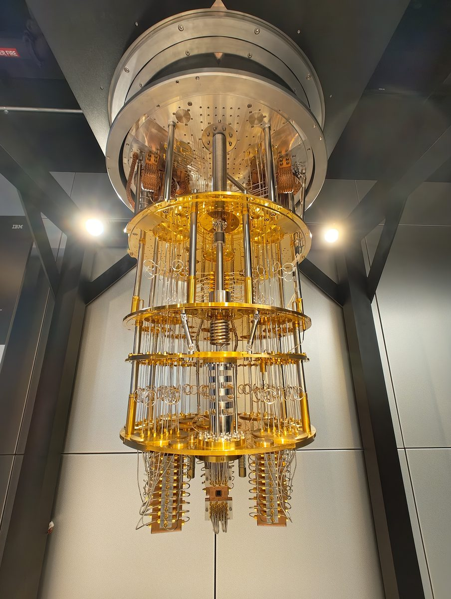

STAGE 4宇宙より冷たい冷蔵庫
希釈冷凍機のしくみ
🎯 ミッション
「なぜ10ミリケルビンなのか」を、熱の小突きと段差の比較から自分で導こう。さらに、ふつうの冷やし方がどこで頭打ちになるか、希釈冷凍機がその壁をどう越えるかを理解する。金色のシャンデリアの正体が分かれば合格。
未達成

ねこ博士
今日は「冷やす」の本気の話だ。その前に、温度とは何かをはっきりさせておこう。
物質の中では、原子や分子がでたらめに動き回ったり震えたりしている。温度とは、このでたらめな運動の激しさのことだ。熱いお茶では分子が激しく暴れ、氷では小さく震えている。
そして環境の粒子が量子ビットに1回ぶつかるとき手渡すエネルギーの目安は、「ボルツマン定数×絶対温度」という積で見積もれる（ボルツマン定数は温度をエネルギーに換算する定数だ）。部屋の温度、絶対温度でいうと約300Kでは、この「小突き1回ぶん」は約4×10⁻²¹ジュールになる。
――前のステージの宿題と突き合わせてごらん。われわれの階段の段差は、いくつだった？
物質の中では、原子や分子がでたらめに動き回ったり震えたりしている。温度とは、このでたらめな運動の激しさのことだ。熱いお茶では分子が激しく暴れ、氷では小さく震えている。
そして環境の粒子が量子ビットに1回ぶつかるとき手渡すエネルギーの目安は、「ボルツマン定数×絶対温度」という積で見積もれる（ボルツマン定数は温度をエネルギーに換算する定数だ）。部屋の温度、絶対温度でいうと約300Kでは、この「小突き1回ぶん」は約4×10⁻²¹ジュールになる。
――前のステージの宿題と突き合わせてごらん。われわれの階段の段差は、いくつだった？

うさ美
段差は約3×10⁻²⁴ジュールでした。比べると、常温の小突き1回は段差の1000倍以上。つまり常温の環境は、1段の高さの1000倍の力で量子ビットをめった打ちにしている。|0⟩ に置いたつもりでも勝手に階段を蹴り上げられ、重ね合わせ以前に、初期化すら成立しません。
冷やすべき目安も出せます。小突き（ボルツマン定数×温度）が段差より小さくなればいい。小突きは温度に比例するということは、300Kで4×10⁻²¹ジュールなら、比例の計算で、小突きがちょうど段差の3×10⁻²⁴ジュールまで小さくなる温度は――約0.24Kですか。
冷やすべき目安も出せます。小突き（ボルツマン定数×温度）が段差より小さくなればいい。小突きは温度に比例するということは、300Kで4×10⁻²¹ジュールなら、比例の計算で、小突きがちょうど段差の3×10⁻²⁴ジュールまで小さくなる温度は――約0.24Kですか。

ねこ博士
計算どおり、5GHzの段差は温度に直すと約0.24Kだ。ただし、0.24Kまで下げれば安心、とはいかない。「小突き1回ぶん」は平均の目安で、熱のでたらめさの中には、たまに平均よりずっと強い一撃が混じる。段差ちょうどの温度では、その「当たりくじ」がまだ頻繁に出てしまう。
救いは、強い一撃の出る割合が、温度を下げると急激に（指数的に）減ることだ。段差換算温度の10分の1、つまり20mK前後まで下げると、段差を越える一撃は100万回に数回のレベルまで枯れる。実機の動作温度が10〜20mK（ミリケルビンは1000分の1ケルビン）なのはこの計算からだ。
この温度がどれほど異様か。夜空の果て、星も何もない宇宙空間にも、ビッグバンの残り火の電波が満ちていて、温度は2.7Kある。実機のチップはその100倍以上冷たい。稼働中の量子コンピュータの中身は、まず間違いなく宇宙でいちばん冷たい場所の一つなんだよ。
救いは、強い一撃の出る割合が、温度を下げると急激に（指数的に）減ることだ。段差換算温度の10分の1、つまり20mK前後まで下げると、段差を越える一撃は100万回に数回のレベルまで枯れる。実機の動作温度が10〜20mK（ミリケルビンは1000分の1ケルビン）なのはこの計算からだ。
この温度がどれほど異様か。夜空の果て、星も何もない宇宙空間にも、ビッグバンの残り火の電波が満ちていて、温度は2.7Kある。実機のチップはその100倍以上冷たい。稼働中の量子コンピュータの中身は、まず間違いなく宇宙でいちばん冷たい場所の一つなんだよ。
温度の物差し（対数目盛）。「小突き1回ぶんのエネルギー」（ボルツマン定数×温度）が段差（プランク定数×5GHz＝換算0.24K）より確実に小さくなるところまで下げる必要がある。平均より強い一撃の混入まで枯らすには換算温度の10分の1程度、10〜20mKが必要で、これは星のない宇宙空間（2.7K）の100倍以上冷たい。この温度では量子ビットは自然に |0⟩ へ落ちてとどまるため、初期化もタダで手に入る。
うさ美
気づいたことがあります。20mKでは、環境のどの小突きにも段差を越える力がほぼ無い。だから |0⟩ から |1⟩ へ蹴り上げられることは、めったに起きません。
反対に、|1⟩ から落ちるほうは止まらないはずです。落ちるのに何かをもらう必要はなく、持っているぶんを手放せばいいのですから。熱いお茶が冷たい部屋で冷めるのと同じで、相手が冷たいほど受け取ってもらえます。
つまり一方通行。放っておけば、ほとんどの量子ビットが自然に |0⟩ にそろう――ステージ1の宿題の答えはこれですね。初期化は、冷蔵庫のおまけとしてタダで手に入る。
反対に、|1⟩ から落ちるほうは止まらないはずです。落ちるのに何かをもらう必要はなく、持っているぶんを手放せばいいのですから。熱いお茶が冷たい部屋で冷めるのと同じで、相手が冷たいほど受け取ってもらえます。
つまり一方通行。放っておけば、ほとんどの量子ビットが自然に |0⟩ にそろう――ステージ1の宿題の答えはこれですね。初期化は、冷蔵庫のおまけとしてタダで手に入る。
ねこ博士
そのとおりだ。手放す相手も言っておこう。量子ビットは段差ぶんのエネルギーを、まわりの電磁波や、基板のごく小さな震えに渡して落ちる。20mKでは、その逆――受け取って上がるほう――がほぼ起きないから、きみの言うとおり一方通行になる。

うさ美
……ただ、いま気になったのですが。その「手放して落ちる」は、こちらが命じたわけではなく、勝手に起きるんですよね。だとしたら計算の途中でも起きるはずで、せっかく |1⟩ にした量子ビットが、都合と関係なく |0⟩ に落ちてしまいませんか。
ねこ博士
その通りで、そこが急所だ。この落下はこちらが仕組んだ操作ではなく、止めようのない漏れで、まさに条件②の敵そのもの。前のステージで見た100マイクロ秒級の寿命とは、この漏れで消えてしまうまでの時間のことなんだ。だから作る側は、漏れを少しでも遅くしようと、材料も形も配線も磨き上げる。
そのうえで、同じ性質を計算を始める前だけは味方に使う。まだ守るべき中身が入っていない時間に、漏れるに任せて全員を |0⟩ にそろえてしまう。敵の性質を、開始前の一度だけ利用する――冷やすことは条件②の防御であると同時に、初期化の供給源でもあるわけだ。
そして、計算し終えた答えを取り出すのは、これとはまったく別の操作だよ。漏れ落ちるのを待つのではなく、こちらのタイミングで、読みたいときだけ手がかりを出させる。それが条件④で、ステージ6の主題になる。
そのうえで、同じ性質を計算を始める前だけは味方に使う。まだ守るべき中身が入っていない時間に、漏れるに任せて全員を |0⟩ にそろえてしまう。敵の性質を、開始前の一度だけ利用する――冷やすことは条件②の防御であると同時に、初期化の供給源でもあるわけだ。
そして、計算し終えた答えを取り出すのは、これとはまったく別の操作だよ。漏れ落ちるのを待つのではなく、こちらのタイミングで、読みたいときだけ手がかりを出させる。それが条件④で、ステージ6の主題になる。
うさ美
守るべき中身がまだ入っていない時間だけ、敵の性質に働いてもらう。開始前の一度きりなら、味方になるんですね。
ねこ博士
では本題、どうやって20mKまで冷やすか。出発点は家の冷蔵庫と同じ原理だ。気体は圧縮すると熱くなり、膨張させると冷える。ポンプで気体を外で圧縮して熱を捨て、庫内で膨張させて熱を奪う――この繰り返しで熱を外へくみ出す。この原理の親戚を、凍りにくいヘリウムガスで動かすと、約4K（液体ヘリウムの温度）までは一直線に着く。超伝導が使える温度だ。
ところが、4Kから先が急に難所になる。理由を考えてみてほしい。
ところが、4Kから先が急に難所になる。理由を考えてみてほしい。
うさ美
4Kでは、ヘリウム以外の物質はぜんぶ凍りついているはずです。「気体を膨張させて冷やす」は気体がなければ使えない。ヘリウム自身はまだ液体だそうですが、液体は膨張させてもほとんど冷えません。
……でも、液体なら蒸発が使えませんか？ 汗が乾くと肌が涼しくなるのは、いちばん元気な分子が飛び出していって、残った分子の平均の元気が下がるからです。液体ヘリウムを蒸発させ続ければ、その分だけ冷えるはずです。
……でも、液体なら蒸発が使えませんか？ 汗が乾くと肌が涼しくなるのは、いちばん元気な分子が飛び出していって、残った分子の平均の元気が下がるからです。液体ヘリウムを蒸発させ続ければ、その分だけ冷えるはずです。
ねこ博士
その手は実際に使われていて、ヘリウムの蒸発冷却で約1Kまで下がる。だが、そこで頭打ちになる。
蒸発は「元気な分子が飛び出す」現象だから、温度が下がるほど、飛び出せる元気を持った分子が指数的に減っていく。1Kを切るころには蒸気がほとんど出なくなり、くみ出せる熱が事実上ゼロになる。蒸発という乗り物は、ここでガス欠だ。
1Kから20mKへの最後の50倍を埋めるのが、20世紀半ばに発明された最終兵器――希釈冷凍機。主役は、ヘリウムの2人兄弟だ。ふつうのヘリウムはヘリウム4。それより中性子が1個少ない軽い兄弟ヘリウム3というのがいて、こちらは地球上にごくわずかしかない希少品だ。
蒸発は「元気な分子が飛び出す」現象だから、温度が下がるほど、飛び出せる元気を持った分子が指数的に減っていく。1Kを切るころには蒸気がほとんど出なくなり、くみ出せる熱が事実上ゼロになる。蒸発という乗り物は、ここでガス欠だ。
1Kから20mKへの最後の50倍を埋めるのが、20世紀半ばに発明された最終兵器――希釈冷凍機。主役は、ヘリウムの2人兄弟だ。ふつうのヘリウムはヘリウム4。それより中性子が1個少ない軽い兄弟ヘリウム3というのがいて、こちらは地球上にごくわずかしかない希少品だ。
うさ美
その希少な兄弟を、わざわざ使うのですね。どう働かせるんですか？
ねこ博士
からくりはこうだ。ヘリウム3とヘリウム4を混ぜた液体を0.9Kより下まで冷やすと、不思議なことが起きる。混合液が、水と油のように2つの層に分かれるんだ。上の層はほぼ純粋なヘリウム3。下の層はヘリウム4の海に、ヘリウム3が6%ほどだけ溶けた薄い層。
そして、ここが心臓部だ。下の層のヘリウム4は、この温度では超流動という特別な状態になっていてね。粘りがなく、熱も運ばず、まわりの邪魔をしない背景に徹する。だから、そこに溶けたヘリウム3の原子にとって、ヘリウム4の海はほとんど何もない空間のようなもので、その中を気体のように自由に飛び回れるんだ。
つまり上の濃い層は、ヘリウム3どうしがぎっしり詰まった液体。下の薄い層は、いわばヘリウム3の気体。この境目を、ヘリウム3が下へ移っていくとき――さて、何が起きると思う？
そして、ここが心臓部だ。下の層のヘリウム4は、この温度では超流動という特別な状態になっていてね。粘りがなく、熱も運ばず、まわりの邪魔をしない背景に徹する。だから、そこに溶けたヘリウム3の原子にとって、ヘリウム4の海はほとんど何もない空間のようなもので、その中を気体のように自由に飛び回れるんだ。
つまり上の濃い層は、ヘリウム3どうしがぎっしり詰まった液体。下の薄い層は、いわばヘリウム3の気体。この境目を、ヘリウム3が下へ移っていくとき――さて、何が起きると思う？
うさ美
蒸発ですか？ 窮屈な液体から、自由に飛び回れる場所へ出ていく――液面から真空へ飛び出す代わりに、ヘリウム3がヘリウム4の海へ飛び出している。汗のときと同じで、飛び出すには元気が要るのだから、残されたほうから熱を奪うはずです。
……ただ、それなら同じ弱点も引き継ぎませんか。さっきの蒸発が止まったのは「低温では飛び出せる分子が枯れる」からでした。こちらも冷えるほど飛び移る原子が減って、途中で同じように止まってしまう気がします。
……ただ、それなら同じ弱点も引き継ぎませんか。さっきの蒸発が止まったのは「低温では飛び出せる分子が枯れる」からでした。こちらも冷えるほど飛び移る原子が減って、途中で同じように止まってしまう気がします。
ねこ博士
そこが、この方式が最終兵器たるゆえんだ。下の薄い層は、絶対零度の近くまで冷やしても、ヘリウム3を6%ほど溶かし込んだままでいる。飛び込み先が枯れないんだ。
なぜ消えないか、深入りしない範囲で理由を2つ挙げよう。ひとつ、溶けること自体が得だからだ。軽いヘリウム3は、仲間どうしでいるよりも、重いヘリウム4に囲まれたほうが深く落ち着ける。ふつうの溶解は「かき混ぜられて散らばる」勢いが原動力だから、冷えると止まる。こちらはエネルギーの得が原動力なので、温度に頼らない。
ふたつ、それでも全部は溶けない。ヘリウム3の原子には「同じ状態には1個しか入れない」という決まりがあってね（電子が原子の中で席を順に埋めていくのと同じ決まりだ）。溶け込む原子が増えるほど、あとから入る原子はもっと速く動く席にしか座れず、そのぶん損をする。この損が最初の得を食いつぶしたところで、それ以上は溶けない。その釣り合いの濃度が約6%なんだ。得と損の釣り合いで決まる値だから、温度を下げても動かない。
なぜ消えないか、深入りしない範囲で理由を2つ挙げよう。ひとつ、溶けること自体が得だからだ。軽いヘリウム3は、仲間どうしでいるよりも、重いヘリウム4に囲まれたほうが深く落ち着ける。ふつうの溶解は「かき混ぜられて散らばる」勢いが原動力だから、冷えると止まる。こちらはエネルギーの得が原動力なので、温度に頼らない。
ふたつ、それでも全部は溶けない。ヘリウム3の原子には「同じ状態には1個しか入れない」という決まりがあってね（電子が原子の中で席を順に埋めていくのと同じ決まりだ）。溶け込む原子が増えるほど、あとから入る原子はもっと速く動く席にしか座れず、そのぶん損をする。この損が最初の得を食いつぶしたところで、それ以上は溶けない。その釣り合いの濃度が約6%なんだ。得と損の釣り合いで決まる値だから、温度を下げても動かない。
うさ美
枯れる仕組みそのものが違うんですね。蒸発は「元気な分子」という、温度が下がれば消えてしまうものを当てにしていた。こちらが当てにしているのは、温度と関係のない釣り合いのほう。
では、冷やす力も最後まで一定なんですか？
では、冷やす力も最後まで一定なんですか？
ねこ博士
一定ではなく、弱くはなる。くみ出せる熱は温度の2乗に比例して小さくなっていく。ただ、蒸発のように指数的に枯れる崖ではなく、なだらかな坂だ。だから壁にぶつからずに10mKまで下りられる。それでも坂は坂で、外から入り込む熱と釣り合うあたり――2mK前後が、この方式の実際の底になる。
あとは下の層に溶け込んだヘリウム3をポンプでくみ出し、冷やして上の層に戻せば、連続運転できる。
装置の実物は、写真で見たことがあるかもしれないね。金色のシャンデリアだ。金色の円盤が何段も吊り下がっていて、上から順に約50K、4K、1K弱、100mK、そして最下段が混合液の器を載せた10mKプレート。量子チップはそこにねじ止めされる。
金色の正体は金メッキした銅。銅は熱をよく伝えてプレート全体を同じ温度にそろえ、金メッキは表面の錆（熱の伝わりを悪くする）を防ぐ。全体をすっぽり真空の缶で覆う――魔法瓶と同じで、真空には熱を運ぶ粒子がいない。さらに各段に、外からの熱の光（放射）をさえぎる盾を重ねる。
あとは下の層に溶け込んだヘリウム3をポンプでくみ出し、冷やして上の層に戻せば、連続運転できる。
装置の実物は、写真で見たことがあるかもしれないね。金色のシャンデリアだ。金色の円盤が何段も吊り下がっていて、上から順に約50K、4K、1K弱、100mK、そして最下段が混合液の器を載せた10mKプレート。量子チップはそこにねじ止めされる。
金色の正体は金メッキした銅。銅は熱をよく伝えてプレート全体を同じ温度にそろえ、金メッキは表面の錆（熱の伝わりを悪くする）を防ぐ。全体をすっぽり真空の缶で覆う――魔法瓶と同じで、真空には熱を運ぶ粒子がいない。さらに各段に、外からの熱の光（放射）をさえぎる盾を重ねる。
左：希釈冷凍機の全体像。金メッキ銅の円盤が上から50K→4K→1K弱→100mK→10mKと段階的に冷たくなり、最下段に量子チップが付く。全体は真空の缶（熱を運ぶ粒子がいない魔法瓶）と放射よけの盾で守られる。右：最下段の混合器。0.9K以下でヘリウム3・4の混合液が2層に分離し、ヘリウム3が上層から下層へ「液体の中へ蒸発」するときに熱を奪う。飛び込み先（下層の6%枠)が絶対零度近くでも消えないため、ふつうの蒸発冷却と違って頭打ちにならない。

実物はこう見える。缶を外した希釈冷凍機――金メッキ銅の円盤が段ごとに吊り下がり、そのあいだを無数の同軸ケーブルが渦を巻いて降りていく。渦巻きは、熱をわざと遠回りさせて伝わりにくくする工夫だ。円盤に見える小さな部品のいくつかが、次のステージの主役になる減衰器。最下段の底、いちばん冷たい場所に量子チップが取り付けられている。
写真: Onri Jay Benally（IBM T.J. ワトソン研究所 ThinkLab、2024年）／ Wikimedia Commons・CC BY 4.0（縮小のみ）
うさ美
ひとつ確認させてください。この冷蔵庫、くみ出せる熱の量はどのくらいなんですか？ 段差のエネルギーがあれほど小さい世界の話ですから、冷やす力のほうも相当ささやかな気がします。
ねこ博士
いい質問だね。10mKプレートでくみ出せる熱は数マイクロワット――100万分の数ワットで、スマホの充電の約100万分の1しかない。ほんのわずかな熱が入り込むだけで、この温度は守れなくなる。
そして思い出してほしい。条件③のために、われわれは室温の機械から量子ビットまでマイクロ波の配線を通さなければならない。配線は金属だ。金属は熱をよく伝える。つまり配線の1本1本が、300Kの世界から10mKの聖域への熱の橋になってしまう。
②「閉じろ」と③「触らせろ」の綱引きが、今度は温度の戦いとして現れるわけだ。次のステージでは、この橋を渡って、矢印を回す合図がどうやって量子ビットに届くのかを見に行こう。
そして思い出してほしい。条件③のために、われわれは室温の機械から量子ビットまでマイクロ波の配線を通さなければならない。配線は金属だ。金属は熱をよく伝える。つまり配線の1本1本が、300Kの世界から10mKの聖域への熱の橋になってしまう。
②「閉じろ」と③「触らせろ」の綱引きが、今度は温度の戦いとして現れるわけだ。次のステージでは、この橋を渡って、矢印を回す合図がどうやって量子ビットに届くのかを見に行こう。
【宇宙より冷たい冷蔵庫 ― 今日の積み上げ】
・温度＝粒子のでたらめな運動の激しさ。小突き1回のエネルギーの目安＝ボルツマン定数×絶対温度。常温（300K）で約4×10⁻²¹J＝段差の1000倍以上 → 常温では初期化すら不可能
・段差（5GHz）の温度換算＝約0.24K。平均より強い一撃まで枯らすため、その10分の1の10〜20mKで運転（宇宙空間2.7Kの100倍以上冷たい）
・おまけ：この温度では |1⟩ から落ちた量子ビットがめったに蹴り上げられない → 初期化がタダ（ステージ1の宿題の答え）
・道のり：圧縮・膨張の冷凍（家の冷蔵庫の原理）で4K → ヘリウムの蒸発冷却で1K（蒸気が枯れて頭打ち）→ 希釈冷凍機で10mK
・希釈冷凍機＝0.9K以下で分離したヘリウム3の濃い層から、ヘリウム4の海（6%枠）への「液中への蒸発」。受け入れ枠が低温でも消えないので最後まで冷える。ヘリウム3を循環させて連続運転
・実物は金メッキ銅の円盤のシャンデリア＋真空の缶＋放射よけの盾。10mKでくみ出せる熱は数マイクロワットしかない → 配線が持ち込む熱との戦いへ（次ステージ）
確認クイズ
Q1. 実機を0.24K（段差の換算温度）ではなく、さらに10分の1の10〜20mKまで冷やす理由は？
正解！ ボルツマン定数×温度はあくまで「平均の目安」で、熱のでたらめさの中にはたまに強い一撃が混じる。強い一撃の割合は温度を下げると指数的に減るので、換算温度の10分の1まで下げれば段差を越える一撃は100万回に数回のレベルまで枯れる。なお超伝導自体はもっと高い温度（アルミで約1K）から働いている。
Q2. 希釈冷凍機が、蒸発冷却では届かない10mKまで冷やせる理由は？
正解！ ふつうの蒸発冷却は「飛び出せる元気な分子」が低温で指数的に枯れて1K付近で頭打ちになる。希釈冷凍機では、ヘリウム3が真空の代わりにヘリウム4の液の中へ「蒸発」する。下層の6%の受け入れ枠は絶対零度に近づいても消えないため、冷やす力が最後まで残る。
Q3. ステージ1で予告された「初期化がタダで手に入る」の種明かしは？
正解！ |1⟩ にいる量子ビットは、段差ぶんのエネルギーをまわりに手放して |0⟩ へ落ちる（もらう必要がないので、冷たくても進む）。常温ならすぐ蹴り上げられて元に戻ってしまうが、20mKの環境には段差を越える力の小突きがほぼ存在しないので、落ちたらほぼ落ちたまま。待つだけでほとんどの量子ビットが |0⟩ にそろう。